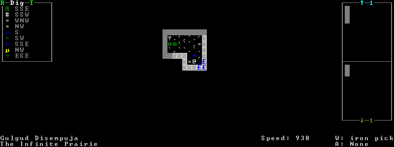

gui/advfort¶
This script allows performing jobs in adventure mode. For interactive help, press ? while the script is running.
Warning
Note that changes are only saved for non-procedural sites, i.e. caves, camps, and player forts. Other sites will lose the changes you make when you leave the area.
Usage¶
gui/advfort [<job type>] [<options>]
You can specify a job type (e.g. Dig, FellTree, etc.) to pre-select it
in the gui/advfort UI. Otherwise you can just select the desired job type
in the UI after it comes up.
Examples¶
gui/advfortBrings up the GUI for interactive job selection. Items that dwarves can use will be available in item selection lists.
gui/advfort -eBrings up the GUI for interactive job selection. Items that the adventurer’s civilization can use will be available in item selection lists.
Options¶
-c,--cheatRelaxes item requirements for buildings (e.g. you can make walls from bones, which you cannot normally do).
-e [NAME],--entity [NAME]Use the given civ (specified as an entity raw ID) to determine which resources are usable. Defaults to
MOUNTAIN(i.e. Dwarf). If-eis specified but the entity name is omitted then it defaults to the adventurer’s civ.
Screenshot¶
Here is an example of a player digging in adventure mode:
